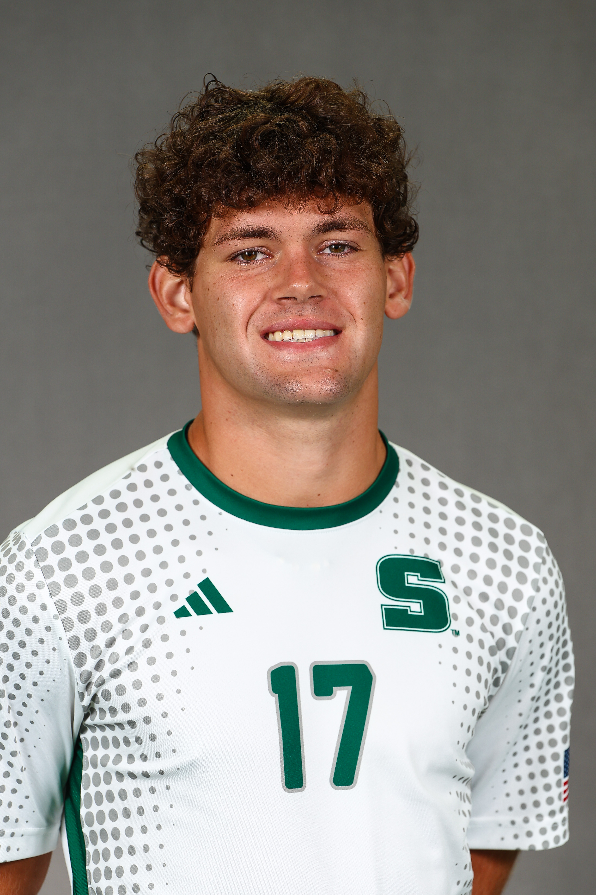
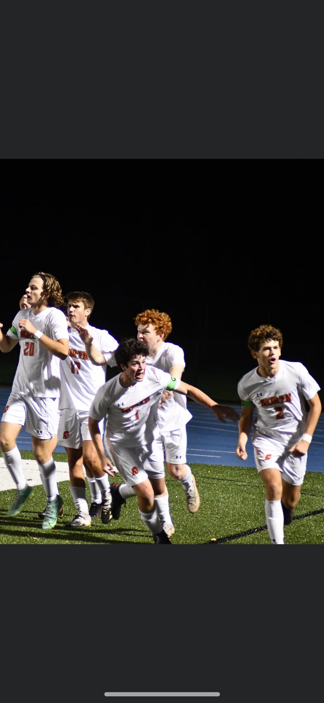
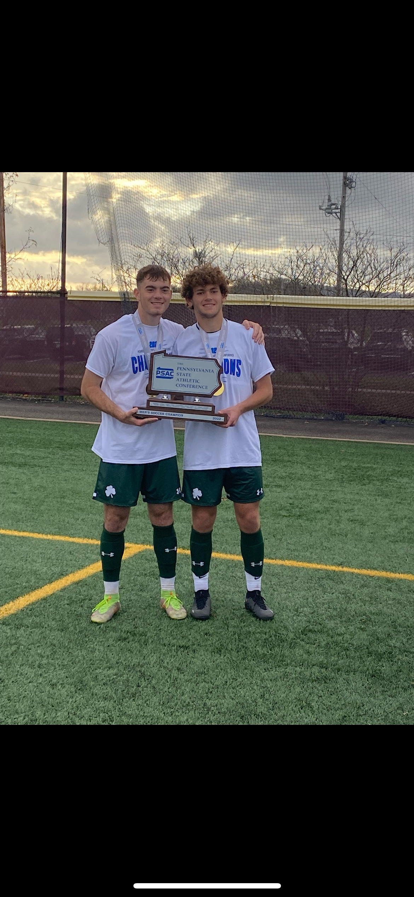
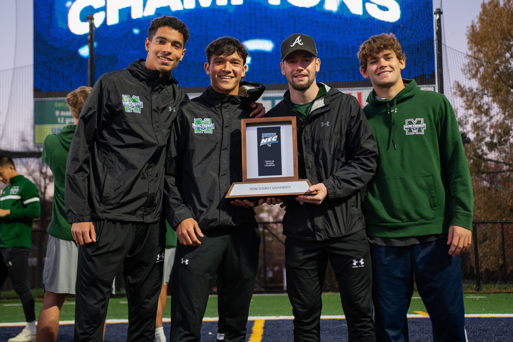
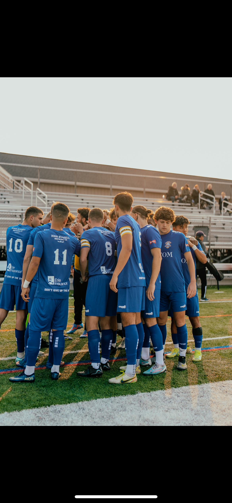
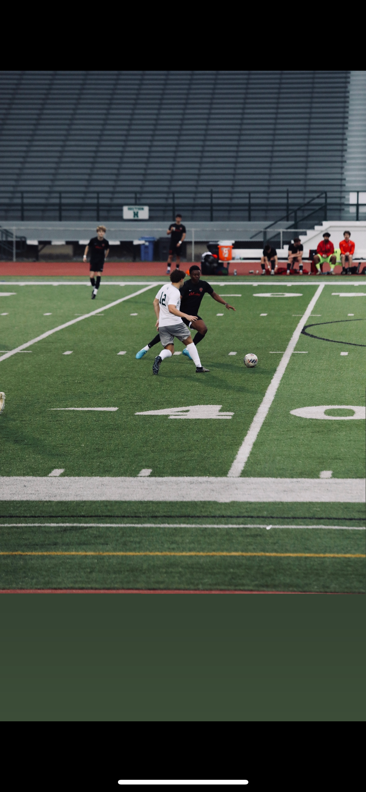

Dylan developed through the Pittsburgh Riverhounds academy from age 12, competing at the ECNL level through age 17 — including a Dallas Cup appearance — and training alongside Steel City FC's first team at 16. At North Catholic High School, he was a four-year varsity starter, three-time All-Section selection, two-time All-WPIAL honoree, and North Catholic Player of the Year. He captained the team to a WPIAL final and PIAA state semifinal, finishing his senior season with 38 goals — second in the entire WPIAL.
At the college level, Dylan won a PSAC championship (D2) and an NEC conference title (D1) at Mercyhurst University before transferring to Slippery Rock, where he started 14 of 17 games and appeared in all 17 his senior year. He's currently entering his 5th and final collegiate season. Alongside college ball, he's spent two seasons as a starter in the NPSL with the Erie Commodores.
Having played both right back and center mid at a high level, Dylan brings a positional versatility that shapes how he coaches — understanding the game as a defender reading pressure and as a midfielder building attacks. Sessions are built around what positions actually demand in real competition.

ECNL, including a Dallas Cup appearance. Trained with Steel City's first team at 16; spent final year in Steel City's academy.
3x All-Section, 2x All-WPIAL, North Catholic Player of the Year. 38 goals senior season (2nd in WPIAL). Captained team to a WPIAL final and PIAA state semifinal.
PSAC champion; NEC Division I conference champion.
Started 14 of 17 games, appeared in all 17, senior season. Entering 5th and final season.
2-year starter, playing alongside college competition.






